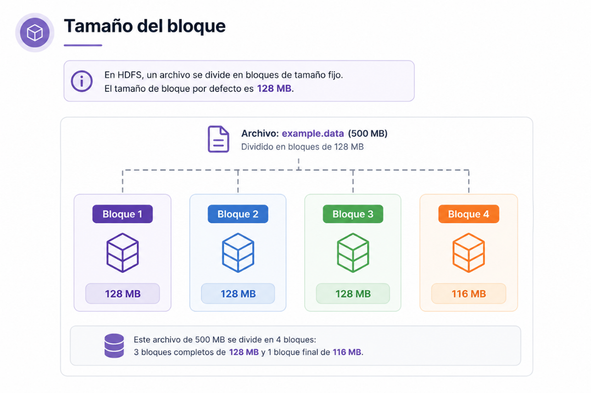
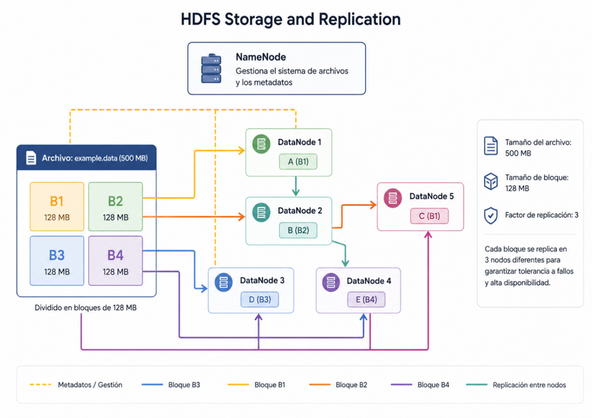

Capítulo 3. Ecosistema de Hadoop
Estructura de Hadoop
Estructura de Hadoop
El Hadoop Distributed File System (HDFS) es el sistema de archivos distribuido de Apache Hadoop. Está diseñado para almacenar grandes volúmenes de datos de forma fiable y proporcionar un acceso de alto rendimiento mediante una arquitectura distribuida basada en múltiples nodos.
HDFS es un sistema de archivos distribuido desarrollado en Java que permite almacenar datos de forma redundante sobre un conjunto de servidores que forman un clúster Hadoop.
Su diseño está orientado a hardware convencional (commodity hardware), donde los fallos de los equipos son habituales. Gracias a la replicación automática de los bloques de datos, el sistema puede seguir funcionando incluso cuando uno o varios servidores dejan de estar disponibles.

Figura 12. División de un archivo en bloques distribuidos dentro de HDFS.
Cuando un archivo se almacena en HDFS, éste se divide automáticamente en bloques de tamaño fijo. El tamaño predeterminado de cada bloque es de 128 MB, aunque puede modificarse según las necesidades de la infraestructura.
Un archivo de 500 MB se dividiría en:
El espacio restante no utilizado se reutiliza posteriormente por el sistema de archivos.
Cada bloque almacenado en HDFS se replica automáticamente, normalmente tres veces, distribuyendo las copias entre diferentes DataNodes del clúster.

Figura. Replicación automática de bloques en HDFS.
Los archivos se dividen en bloques que son distribuidos entre distintos nodos del clúster.
La capacidad aumenta simplemente añadiendo nuevos servidores al clúster.
Cada bloque dispone de varias copias distribuidas entre diferentes nodos.
El sistema continúa funcionando incluso cuando fallan algunos servidores.
Especialmente diseñado para almacenar grandes conjuntos de datos.
Optimizado para lecturas y escrituras secuenciales de grandes volúmenes de datos.
Las aplicaciones se ejecutan cerca de donde se encuentran almacenados los datos.
El NameNode administra el sistema de archivos mientras que los DataNodes almacenan los bloques de datos.
HDFS sigue una arquitectura maestro-esclavo compuesta por dos tipos de nodos.

Figura 13. Arquitectura maestro-esclavo de HDFS.
| Característica | Descripción |
|---|---|
| Bloques | 128 MB por defecto. |
| Replicación | 3 copias por defecto. |
| Escalabilidad | Añadiendo nuevos nodos. |
| Arquitectura | NameNode + DataNodes. |
| Disponibilidad | Alta tolerancia a fallos. |
HDFS constituye el núcleo del almacenamiento distribuido de Apache Hadoop. Su capacidad para dividir los archivos en bloques, replicar automáticamente la información y distribuir los datos entre múltiples nodos permite construir sistemas Big Data altamente escalables, fiables y preparados para trabajar con volúmenes masivos de información.